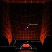
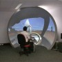

Dome Immersive gaming
 |
 |
 |
 |
|
|  |  |
Geodesic domes have had an increase in their popularity as they are adapted to create a totally immersive experience for gamers. This can be adapted to low and higher-budget consumers.
The following has been written in 2004 by Paul Bourke, Melbourne Australia, a top expert in this field.
ABSTRACT
As computer performance and graphics hardware continue to improve, the gamer is increasingly being presented with richer and more realistic visual environments. Viewing these virtual environments is generally still based upon display technology that does not exploit two very important characteristics of our visual system, namely stereoscopic vision that is responsible for the enhanced depth perception we see in the real world and a wide field of view that allows us to sense activity in our far peripheral vision. In what follows it will be argued that for immersive gaming a wide field of view is both functionally more useful and places less stress on the
visual system than stereoscopic viewing. In order to support gaming with a wide vertical and horizontal field of view a low cost projection system will be introduced and the implications for game developers discussed.
1. INTRODUCTION
There are two components of the human visual system that contribute significantly to our visual experience but are generally not catered for when game playing within a 3D virtual world. We have two eyes that are horizontally offset from each other and therefore two slightly different views are presented to the visual cortex. These two views are responsible for giving the strong sense of depth experienced in the real world compared to the lack of the same sense of depth when looking at a virtual 3D environment on a standard 2D display. Additionally, our eyes have a much wider field of view than the 20 or 30 degrees presented to our visual system when looking at a standard computer display. Since these two characteristics of our visual system play such a significant role in the way we experience the real world then they would also be expected to enhance the experience within a virtual environment. In
conjunction with increased realism, if the stimuli makes the maximum use of the visual sense then there is more chance of a sense of immersion and generally a richer experience when within the virtual 3D world.
1.1 Stereoscopic displays
Stereoscopic displays are based upon a number of technologies, the most common are: frame sequential or quad buffer stereo, HMD (head mounted displays), passive stereoscopic projection using polaroid glasses or Infitec filters, and more recently utostereoscopic displays that don’t require the user to wear any eyewear. Frame sequential stereo require high refresh rate CRT monitors and shutter glasses. The combination of ghosting levels and flicker (even at 120Hz) generally leads to eye strain [6] over what most gamers would consider a short period of an hour. Passive stereo is usually based upon polaroid glasses and matching filters in front of two digital data projectors and a special non-depolarising screen surface. While there is no noticeable flicker with digital projectors, the ghosting level resulting from physical limitations in linear or circular polaroid is the main source of eye strain. The newer Infitec technology employs special optical filters and is remarkable in that it has essentially zero ghosting but has the disadvantage of much higher cost and a very sensitive hardware configuration. HMDs [9] while increasingly affordable are lower resolution and require the user to focus at infinity, not a natural viewing situation. The autostereoscopic displays, while an exciting technology and are being promoted for gaming but are still very low resolution and usually place unnatural limitations on head position and movement.
There are certainly a number of games currently available that support stereoscopic 3D viewing and there are additionally some driver based solutions that provide stereoscopic viewing to games that don’t have explicit support. In general one needs to be very careful when presenting stereoscopic imagery so as to give correct depth cues and to minimise the degree of eye strain. Additionally, the eye strain resulting from ghosting (leakage of a little of the image intended for one eye reaching the other eye) requires high quality hardware not found in commodity products. There are very few, if any, stereoscopic viewing systems that can be used for prolonged periods without placing a significant strain on the visual system, usually resulting in headaches. Even in an ideal stereoscopic 3D system there are causes of eye strain [7], in particular, there is an inherent accommodation and convergence conflict. For these and other reasons very few gamers choose to off. It will be suggested that enhanced depth perception does not necessarily give the player in stereoscopic mode any advantage over other players with standard 2D displays. In general it should be noted that the depth perception in stereoscopic enabled games is almost never configured to give a correct sense of scaled depth.
Even if a system was correctly configured, the depth relationships in a game are most often fairly obvious from occlusion, lighting, shadow, and motion cues. For example there is no significant advantage in being able to accurately judge whether a projectile is 10m or 15m away, the only meaningful information is the existence of the projectile so evasive action can be taken. On the other hand in 3D action games a significant advantage can be obtained by having graphical information in the periphery of our visual system. Indeed, it is likely that this wide horizontal field of view gave our ancestors a similar advantage allowing them to sense a predator (stalking lion) as early as possible.
1.2 Engaging peripheral vision
There are a number of display technologies one could propose that would deliver seamless graphics to our peripheral vision. Many have been built for virtual reality and high budget simulators. Some, like the CAVE [10] combine both stereoscopic and peripheral vision together. In general they require both multiple projectors and multiple computers [8], finely tuned calibration and/or edge blending, and often need special projection surface geometries. While these environments are certainly capable of delivering an immersive experience, because of their cost they largely remain in the domain of research institutions or employed for specific commercial applications.
Gaming with a wide horizontal field of view is traditionally approached by adding separate displays either with multiple graphics cards or with dedicated products such as the Matrox TripleHead2Go [1] or products by DigitalTigers [2]. The outer 2 displays are often angled so as to partially surround the viewer. This is not entirely satisfactory, not only is there a border or gap between each display but the field is view is rarely more than 90 degrees. Our actual horizontal field of view is closer to 200 degrees and even our more limited vertical field of view is certainly much greater than that offered by horizontally arranged LCD panels.
If we can seamlessly engage our peripheral vision then not only do we get a greater sense of “being there”, referred in some circles as immersion or “presence”, but for more reaction based games there is significant benefit from being able to sense movement on the edge of our vision. The discussion here does not suggest that the gamer moves his/her head around to see objects on the sides of the display as is often the case in driving or flight simulators employing multiple monitors. Rather the gamer looks straight ahead and senses the peripheral imagery in the same way they would in real life. The player then becomes hermetically sealed within the virtual
environment, the boundary of the display and the real world are not visible. Importantly, unlike current stereoscopic displays which inherently result in eye strain, peripheral vision is a significantly more natural way to view a virtually presented 3D environment.
2. WIDE FIELD OF VIEW PROJECTION
2.1 Spherical mirror
An essential characteristic of any system that creates a wide field of view is how to scatter the light from a projector onto the display surface. If low cost and maintenance are important then a single projector approach is considered necessary. The traditional way to do this is with a fisheye lens [4], but a fisheye lens fitted to a projector is technically challenging which is reflected in their price that put them outside the budget of the most gamers.
Here I propose an alternative single projector based projection system for immersive gaming and other virtual reality applications. It solves the optical problem by using a spherical mirror to scatter light across a wide field of view [3]. The distortion that would normally result when reflecting a computer generated image off a spherical mirror is corrected for in software with minimal processing overhead thanks to the power of today’s graphics hardware. While there are some advantages projecting onto smoothly changing surfaces such as cylinders and domes, the approach can also be used to project onto almost any (concave) surface including existing rectangular rooms.
Figure 1. 100 degree (top) and 140 degree (lower) horizontal field of view using a perspective projection.
2.2 Perspective projections
The first consideration for developers planning to support any wide field of view projection is that a single perspective projection is no longer adequate, unfortunately orthographic and perspective projections are usually the only camera projection modes supported by games because they are based upon graphics acceleration and APIs such as OpenGL. A perspective field of view of more than about 100 degrees becomes increasingly distorted and the pixel efficiency drops in the most important region, the central part of the image. See figure 1 for examples of a 100 degree horizontal field of view and a 140 degree field of view (both perspective). The distortion is quite evident at 140 degrees but that is not nearly as wide as our visual system can absorb. It is clearly not possible
to create a 180 degree perspective horizontal field of view by using a single perspective projection let alone larger angles.
2.3 Cubic maps
For immersive environments a more useful image format are cubic maps, that is, the six 90 degree perspective projections from the current camera position to each face of a unit cube centered on the camera. This is not a new idea for games or virtual reality applications since cubic maps are often used to create high quality backgrounds or environmental lighting [11]. If all 6 cubic maps are available then the entire visual field is defined and therefore any immersive projection can potentially be formed. For most immersive displays not all 6 cubic faces are required, for example in figure 2 it can be seen that only 4 are required to create the fisheye that would fill a hemispherical dome surface. If the fisheye image in figure 2 were projected through a fisheye lens located near the center of a hemispherical dome them the result on the dome surface would look undistorted to a viewer also located near the center of the dome.
Figure 2. Four cubic maps (left) are required to reconstruct a fisheye (right) for a hemispherical display.
The software model for capturing the cubic faces is often referred to as the multipass texture capture. The virtual camera of the game is modified such that it has a 90 degree vertical and horizontal field of view. The scene is rendered up to 6 times, each render has the camera pointing in a different direction, namely towards the center of each face of the unit cube. On each render instead of displaying the image to the user the image is copied to a texture for later use. At the end of these passes all the textures are applied to a mesh which is then rendered and displayed, typically using an orthogonal camera model. There is clearly a performance penalty in rendering the scene a number of times and then performing the final textured mesh render. The final rendering phase has very little affect on the performance using today’s graphical hardware and is independent of the scene complexity. The multipass rendering performance is proportional to the scene complexity but there are generally efficiencies that mean the performance factor is less than the number of rendered views.
Figure 3. Four cubic maps (left) and warped image (right) for projection onto a hemispherical dome after reflection from a spherical mirror.
2.4 Image warping
Consider positioning the image from a data projector on a portion of a spherical mirror. The light will be scattered across a wide angle, the exact coverage depends on the area of the mirror used, the curvature of the mirror, and the relative position of the projector. It is relatively straightforward to achieve 180 degrees horizontally and 140 degrees vertically. This reflected light falling on a surface such as a hemispherical dome would appear quite distorted. It is possible to predistort the image (from now on referred to as warping) so that the result looks correct on the display surface. Such a warped image for a particular mirror/projector/dome arrangement is shown in figure 3. The problem then is how to determine the image such that when it is reflected from the spherical mirror and lands onto the final display surface, appears correct.
Figure 4. Example of ray casting simulation, model of physical geometry and projector specifications (left) and verification of simulated projection test (right).
The warping can be most easily derived by simulating the projection environment and effectively casting rays from a virtual projector through points in the image plane, calculating where they strike the spherical mirror and then where that reflected ray hits the final display surface. The result is a knowledge of both where any point in the projected image plane appears on the display surface as well as where any position on the display surface appears in the image plane. In the same way that a fisheye image inscribed within the 4:3 aspect ratio of most data projectors means that parts of the image plane are not used, there may be parts of warped image plane that are not used.
For a spherical mirror these may correspond to parts of the image plane that don’t strike the mirror or parts of the image where the corresponding rays would miss the intended display surface area. See figure 4 for an example of the projection geometry for an upright dome and a simulated verification of the resulting warped image on the dome surface. Figure 5 shows the warped image itself and the result on the upright dome surface.
The warping can be implemented in OpenGL by applying the cubic maps as textures on a suitably constructed mesh. This mesh is made up of nodes and texture coordinates derived from the simulation such that when the cubic maps are applied as textures and the result viewed with an orthographic camera, the result is the desired warped image. Equally one could first create a fisheye image and then apply that to a different mesh, but one that creates the same visual effect, namely an undistorted view on the display surface. Figure 6a shows the triangular mesh onto which 4 cubic maps are applied in order to create a fisheye image. Figure 6b shows the triangular mesh that achieves a warped result for projection using a spherical mirror into the same upright hemispherical dome surface. The texture coordinates at each node are obviously important but can’t be readily illustrated in the figure except by their effect on the fisheye image texture. In reality a much higher resolution mesh would be used than is shown in figure 6, a coarse mesh is illustrated there simply for clarity.
Figure 5. Photograph showing an upright [5] dome (left) and the corresponding warped image (right).
It should also be noted that it may be necessary to perform brightness corrections, this is equally straightforward using a textured mesh in OpenGL without any additional performance penalty. This intensity correction can be required to compensate for different path lengths of the light or to reduce the effects of diffuse reflection on different parts of the display surface. These effects can also be derived from the simulation of the physical environment, they are often unnecessary and are outside the scope of this discussion
except to point out they are not trivial, for example, they need to take account of the gamma of the projection system and are thus dependent on the attributes of the data projector.
It can perhaps now be appreciated that the warping can be calculated irrespective of the geometry of the final display surface, the only difference is the exact warping mesh to which the cubic map textures are applied. This warping mesh can additionally be computed for any mirror shape but there is the advantage of simplicity and availability of spherically shaped mirrors. Indeed, once software has been written to support one sort of warping then it can be used in any projection geometry, the only difference is the description of the warping required. This description can be stored in a data file that is unique to each installation.
Figure 6. Cubic map capture and application to a textured mesh for dome projection using a fisheye (left) and warp for projection using a spherical mirror onto a dome (right).
2.5 Viewer position
In all these environments the view is only strictly correct for a single position, although it may be constructed for any position. For gradually curved screen surfaces such as domes or cylinders the distortion experienced by viewers at other positions is rarely a problem for a range of modest distances from the position the imagery is created for. This is largely because the distortion changes smoothly across the display surface, however lines that are supposed to be straight will still only be straight when viewed from the correct position. It should be noted that this dependence on viewer position is true for all immersive displays including stereoscopic displays.
The only solution is to employ head tracking so that the content changes with viewer position, this by definition means the environment only appears undistorted for a single user. For projection surfaces with corners it is much more important to be located at the correct position otherwise, for example, objects moving in a straight line that crosses a discontinuity such as a corner will appear to bend for all viewing positions except the one position the warping is computed for. Similarly camera panning will result in very obvious distortions at the corners. Figure 7 is an example of warping where the virtual environment is projected onto three walls and ceiling in a rectangular room, the game player position is arranged directly above the mirror such that their peripheral vision is filled and they don’t experience reflected light off the mirror.
The approach discussed is based upon single projectors for reasons of cost and simplicity, this does however limit the resolution of the projected display. This resolution limit is another feature of the human visual system that is not fully utilized on most projected displays. Fortunately SXGA+ (1400×1050 pixel) resolution is now available at commodity prices, unfortunately there don’t seem to be higher resolution commodity products on the near horizon.
Projected image that results in an undistorted view, top/right. Photographs of the actual room in 4 segments, note the camera is located further back from the ideal viewing position.
3. SUMMARY
Presented is a low cost immersive projection system requiring a single data projector and a low cost spherical mirror. The final projection surface can be any reasonable shape, for example, a partial cylinder enveloping the gamer, a hemispherical dome, or a rectangular room. For this and indeed for any immersive projected environment, game developers need to implement cubic map multipass rendering. Once this is done it is a straightforward mapping of the cubic map images as textures onto a mesh with appropriate texture coordinates. Furthermore supporting a new projection environment only involves reading a data file containing the new warping mesh, no other aspect of the game needs to change. While stereoscopic projection is more common in games, it is expected that peripheral vision supported by the immersive environments discussed here will give the player a gaming advantage compared to the questionable advantage and without the eyestrain associated with stereoscopic displays.
4. REFERENCES
[1] Matrox Triplehead2Go, supplier of graphics display extenders. Web reference: